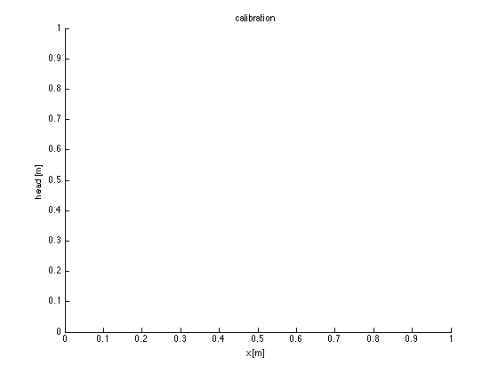
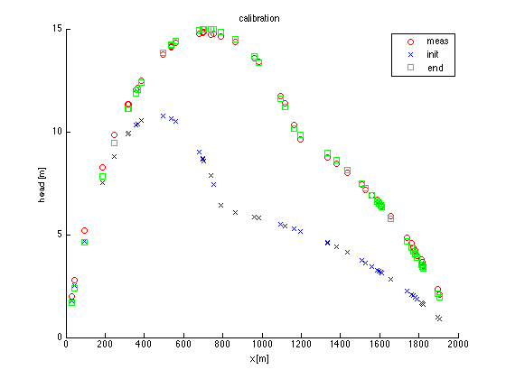

Generic calibration using Matlab's lsqnonlin optimizer
Calibration can be done in Matlab using one of the optimizers. The most useful one for groundwater models should be the Marquardt Levenberg solver called lsqnonlin. It has to be calles as follows
[pEnd,....J] = lsqnonlin(@modelWrapper,pStart)
The input is a pinter to the modelWrapper, which as to take a parameter vector as intput and which must provide the model results minus the measurments (or vice versa) as output. lsqnonlin will then internally iterrate until the residuals are minimal and provide finally the vector with the so optmized parameters.
Contents
- Pre and after processing is done in a script called
- Description of the overall process
- Structure of the calibration
- Parameter transformation, lower and upper limits
- Defining and passing parameters
- Results and calibration statistics
- Calibration using non linear parameter optimizationUsing lsqnonlin
- Defaults: initial parameter values not changed during any optimization
- Generate synthetic measurements if necessary
- Use of the non-linear solver
- Finalizing statistics derived from the Jacobian (sentivity matrix J)
- Uncertainty reporting
- Plot results
Pre and after processing is done in a script called
Calib
from which lsqnonlin is alled with the proper parameter set and which also handles presentation of the results.
Description of the overall process
The actual model takes more than just the parmeters p. These other parameters and anything else that the model needs not being one of the parameters is made available through a global declaration both in the workspace and in the modelWrapper. The modelWrapper can then assemble the actual and complete parameter set required and pass this to the actual, say regular groundwater model. Also, conversion of log parameters that may be preferred in the calibration will be converted to actual parameters in the modelWrapper. The modelWrapper also transfers the outcomes of the regular model into a set of residuals. This is done by selecting the required data from the output of the actual model and subtracting the measurements. Note that also these measurements are passed to the modelWrapper through a global declaration in both the workspace and the modelWrapper. Alternatively, one might prefer reading the measurements form disk at any call of the model wrapper, but this will be much much slower.
Structure of the calibration
The structure is then as follows
calib makes sure that measurements are present prepares parameter vector p0 calls lsqnonlin(...p0) loop lsqnonlin --> p modelWrapper prepares actual parameter set for model actual input --> model modelwrapper <--- groundwater results <--- model selects results at measurement locations and times computes residuals by subtracting measurements lsqnonlin <-- residual <--- modelwrapper sees if optimum has been reached if not loop once more else finish loop end loop caib <-- final parameter vecter, statistics <-- lsqnonlin() compute various paramter statistics display output Compare oldParametrs with New parameters Shows diverse statistics plots the measurements, initial model and final model results enb calib
Parameter transformation, lower and upper limits
It is generally preferred to optimize the log of the actual parameters
or rather the log of a multiplyer for the actual parameters. This is
beneficial for all parameters that have zero as a natural lowest limit.
Hence the parameter is then
par = exp(p)*par0
p = ln(par/par0)
p=0 is then a good starting value for the parameters.
This transformation works less well for parameters without a natural zero
such as head or elevation. In that case we may have to transform the
actual values such that they always remain positive. Depth may thus be a
better choice than elevation. We can always transform such that the
multiplyer remains positive. For instance by adding a suitable value.
However, the value range of such parameters will not be between 0 and Inf
as is the case with many physical quantities. Therefore we should in that
case use lower and upper limits in the call to lsqnonlin
[pEnd,....] = lsqnonlin(p0,ll,ul)
For instance if alpha is a parameter that can vary between 0 and 1
and we are using p = ln(alpha/alpha0) then we should also use
ll = ln(lowestAlpha /alpha)
ul = ln(highestAlpha/alpha)
To make this work, we see that we should set lowestAlpha to a small
value>0 instead of zero. Perhaps we could add 1 to alpha and let the
actual parameter vary between 0 and 1 or -1 and 1 for instance.modelWrapper should take care of all the necessary to and back parameter conversions and is, therefore, alsways custom made. instead of modelWrapper(), we may prefer calling this function residuals() as that is what it computes. The results are only seen within lsqnonlin
At the level of calib only actual parameters will be of interest However, we have to pass the converted paramters, which is a log-transformed subset of the total set of parameters to lsqnonlin. The length of p is equal to the parameters that are being calibrated only. We also have to deal with the final pEnd outcome of lsqnonlin. These have to be converted to actual parameter values for only those parameters that were optmized in the calibration.
Defining and passing parameters
To allow this we will work with a parameter set contained in a cell array that has the following fields defining one parameter per line Par = { parName parValue lowerBound upperBound use; ... parName .... } The use value, which is 0 or nozero or true or false, is used to dicern which of the parameters will take part in the calibratin and which will be passed to the model as given. The model will generally need many more parameters than contained in the parameter set just outline. Such other parameters will never be calibrated will be calibrated and are called defaults. The default parametes are communitated with the modelWrapper through a global declaration in both the workspace and in modelWrapper. Defaults are specifie das parametername,value pairs. They are contained in a cell array consisting of one line: defaults = {parName1,parValue1,parName1,parvalue2,....}
It is a user's choice which parameters will be considere defaults and which are conveyed through the Par cell array just explained. Generally it is not convenient to have a very long Par list with only a few of the defined parameters actually calibrated.
modelWrapper will take care to combine the defaults with the calibration subet. It will apply the parameter set p, i.e. the ln values of the parameters to be calibrated on the parameters in Par and leaves the parameters in Par that will not be calibrated untouched. Then it will join the parameters and the defaults as a cell vector of parName,parValue to obtain the full set of parameters necesssary to run the model and pass this vector to the model. The model will interpret this input as parName,parValue pairs, which can be specified in any order as long as the set is complete.
Results and calibration statistics
The final parameters will be converted to actual ones in calib. The old and new parametrs will be printed together with their esimated standard deviation and uncertainty, which is defined as 100*stdPar/abs(Par) The parameter covarians and correlation matrices will be computed and shown and the measurements will be shown together with the initial and final model results. TO 130619
Calibration using non linear parameter optimizationUsing lsqnonlin
global Par defaults meas iter % parameters that must be statically known in modelWrapper NP = 50; % number of measurement (locations) iter = 0;
Defaults: initial parameter values not changed during any optimization
defaults = { 'sL', 0, 'sR', 0, 'L', 2000, 'N', 0.002};
% parameters that may be calibrated depending on use (right-most column)
Par = parObj({ % PARNAME VALUE LB UB LN? USE
'kL' 1 1 200 1 1
'kR' 20 1 200 1 1
'alpha' 0.4 0 1 0 1 % real alpha varies from 0-1 see modelWrapper
'zB' -15 -5 -40 0 1 % zB is treated as depth hear, see modelWrapper
});
Generate synthetic measurements if necessary
% The true parameters are defined as off sets from initial parameters % Here are the offsets. Offsets are muliplyers for log-transformed % paramaters and are regular offsets for non-transformed parameters. Poff = parObj({ % last column (useFlag) is required but not used 'kL' 2 1 'kR' 0.5 1 'alpha' 0.2 1 'zB' 5 1 }); parTrue = Par.changeBy(Poff); % Here is the so-called true parameter set stdMeas = 0.04; % standard error of the measurements % If loading measures is succuessful, create them if ~exist('meas.mat','file') meas = parTrue.syntheticMeas(NP,stdMeas); save meas meas; end % % if NP does not match numel(meas) generate new ones load meas if size(meas.y)~= NP meas = parTrue.syntheticMeas(NP,stdMeas); save meas meas end
Use of the non-linear solver
[p0,lb,ub] = Par.toCalib(); % get initial parameters
[pEnd,resNorm,reSid,exitflag,output,lambda,J] = lsqnonlin(@modelWrapper,p0,lb,ub);
Iter 1 50.55 50.55 50.55 50.55 Iter 5 50.55 10.12 10.12 10.12 Iter 9 10.12 10.12 2.664 2.664 Iter 13 2.664 2.664 2.664 1.991 Iter 17 1.991 1.991 1.991 1.991 Iter 21 1.874 1.874 1.874 1.874 Iter 25 1.874 1.958 1.958 1.958 Iter 29 1.958 1.958 1.782 1.782 Iter 33 1.782 1.782 1.782 1.698 Iter 37 1.698 1.698 1.698 1.698 Iter 41 1.55 1.55 1.55 1.55 Iter 45 1.55 1.45 1.45 1.45 Iter 49 1.45 1.45 1.436 1.436 Iter 53 1.436 1.436 1.436 1.42 Iter 57 1.42 1.42 1.42 1.42 Iter 61 1.419 1.419 1.419 1.419 Iter 65 1.419 1.419 1.419 1.419 Iter 69 1.419 1.419 1.419 1.419 Iter 73 1.419 1.419 1.419 Local minimum possible. lsqnonlin stopped because the final change in the sum of squares relative to its initial value is less than the default value of the function tolerance.
Finalizing statistics derived from the Jacobian (sentivity matrix J)
J=full(J); % convert sparce J to full J. J is not sparse Inv = (J'*J)^(-1); B = Inv*J'; % Both columns should be the same fprintf(' pEnd pEnd\n'); display([pEnd B*meas.y]); % final parameters from lsqnonlin and J Cov = resNorm*Inv; % covariance matrix of the parameters sigmaP = sqrt(diag(Cov)); % std of the parameters Cor = Cov./(sigmaP*sigmaP'); % correlation matrix of the parameters display(Cov); display(Cor);
pEnd pEnd
ans =
0.2271 -1.4218
-1.2459 -1.3387
0.1852 0.0154
-5.0000 -4.4572
Cov =
0.3540 0.3983 0.0105 9.3909
0.3983 0.4603 0.0108 10.7395
0.0105 0.0108 0.0009 0.2493
9.3909 10.7395 0.2493 252.4289
Cor =
1.0000 0.9866 0.5832 0.9934
0.9866 1.0000 0.5289 0.9963
0.5832 0.5289 1.0000 0.5201
0.9934 0.9963 0.5201 1.0000
Uncertainty reporting
[~,~,~,~,parNew] = Par.toCalib(pEnd); [unc,sigP] = Par.uncert(sigmaP); % uncertainty Par.show({'oldPar','truePar','newPar'},{parTrue,parNew},sigP,unc); figure; hold on; xlabel('x [m]'); ylabel('head [m]'); title('calibration'); fprintf('\n\n');
Warning: Inputs to WARNING might be out of order. The 'on', 'off', or 'query'
option should be the first input to WARNING.
Warning: on
Parameter useFlag logFlag oldPar truePar newPar stdP %uncert
kL 1 1 1 2 1.255 1.813 181.3
kR 1 1 20 10 5.753 1.971 9.854
alpha 1 0 0.4 0.6 0.5852 0.03017 0.03017
zB 1 0 -15 -10 -20 15.89 15.89
Warning: Inputs to WARNING might be out of order. The 'on', 'off', or 'query'
option should be the first input to WARNING.
Warning: off
 Plot results
plot(meas.x, meas.y, 'ro'); plot(meas.x, modelWrapper(p0 )+meas.y, 'xb'); plot(meas.x, modelWrapper(pEnd)+meas.y, 'gs'); legend('meas','init','end');
29.76 Iter 77 1.419